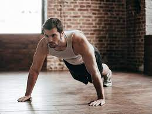

10 Different Types Of Push Ups That Will Help You Live A Healthy Life
 TRENDING VIDEOS STORIES QUIZZES MEMES SPOTLIGHT Sign In
Categories
News What`s your mood? Entertainment Humor Opinion Food Travel Women LGBTQIA Animals Sex & Relationships Culture Sports Tech MenOur channels
View all About Us Contact Us Advertise With Us Careers Privacy policy Terms and conditions AdvertisementHEALTH
Apr 18, 2020 at 19:2910 Different Types Of Push Ups That Will Help You Live A Healthy Life
Dhirendra Kumar
9 shares | 1159 views The push-up is one of the simplest and most functional exercises around. While the traditional version of a push-up is really beneficial in itself, there are many different kinds of push-ups that you can do. These variations work out almost every muscle you’ve got. So give these other versions a try and see how they fit into your fitness routine:
1. Regular Push Up
Before trying out new variations, it is of utmost importance to do the basic excercise perfectly. You need to focus on quality rather than quantity. Your posture and form need to be accurate to do push-ups perfectly. So first, learn how to do regular push-ups accurately and then try other variations.
2. Incline Push Up
Incline push-ups are a great way to start a push-up routine if you have trouble doing basic push-ups. It's an elevated form of a traditional push-up. All you need is a stable surface such as a table, desk, or wall. This is perfect for beginners as it puts less stress on your elbows and significantly reduces the amount of body weight you are lifting.
3. Decline Push Up
Decline push-up is an advanced variation of the basic push-up in which your feet are elevated so that your body is aligned at an angle to the floor rather than parallel. For this, you need a bench, step, or some other solid object to rest your feet on. Adjusting the bench height allows you to customize the intensity of your workout using just your body weight.
4. Wide Push Up
The wide push-up is a variation with the hands positioned wider than shoulder-width. By positioning your hands further apart, wide push-ups target your chest and shoulder muscles more than standard push-ups. If wide push-ups lead to pain in the front of your shoulder, opt for a narrower version.
5. Diamond Push Up
A diamond push-up is an advanced form of the classic push-up. It is performed by placing your feet and hands on the floor (hands touching) with your back straight and using your chest and arm muscles to descend and ascend the weight of your body off the floor. It's commonly used as a warm-up in the army. This exercise is also known as the 'Triangle Push-Up'
6. Spiderman Push Up
The Spiderman push-up will not turn you into a superhero, but it will definitely help tone your entire body. Though this exercise primarily strengthens the chest and the arms, it also increases hip flexibility and really works your core too. If you’re good with basic push-ups, the spiderman push-up is pretty easy to pick up.
7. Pike Push Up
Pike push-up is a slightly difficult version of the traditional push-up that increases your shoulder strength. It is a fantastic exercise for building upper body strength and developing the overhead push movement.
8. Hindu Pushup
Hindu push-up is a variation which got its name because of its huge popularity within traditional Indian wrestlers and Indian martial arts. Traditional Indian wrestlers have been performing Hindu push-ups for centuries to strengthen their upper body. Due to its compound movements, it’s a complete package and works on muscle strength and endurance.
9. Clapping Push Up
Clapping push-up is one of the best exercises to increase power and speed in the upper body. It enhances core stability, essential to a strong stance in boxing. It also builds shoulder mobility, reflexes and upper-body strength.
10. Archer Push Up
The archer push-up allows you to train one arm with greater focus and intensity than the standard version of the exercise. It promotes full-body control, as one side supports a major part of one's body weight while the body is inclined to shift or rotate. A major aspect of this push-up is keeping the body tight, controlled and steady. This exercise is not for beginners. It requires progression exercises.
If you're new to push-ups, don't push yourself too hard. Always listen to your body and go at your own pace.
Advertisement TOP PICKS FOR YOU Advertisement Trending Follow ScoopWhoop Newsletter Facebook Twitter Youtube ScoopWhoop Media Pvt Ltd.